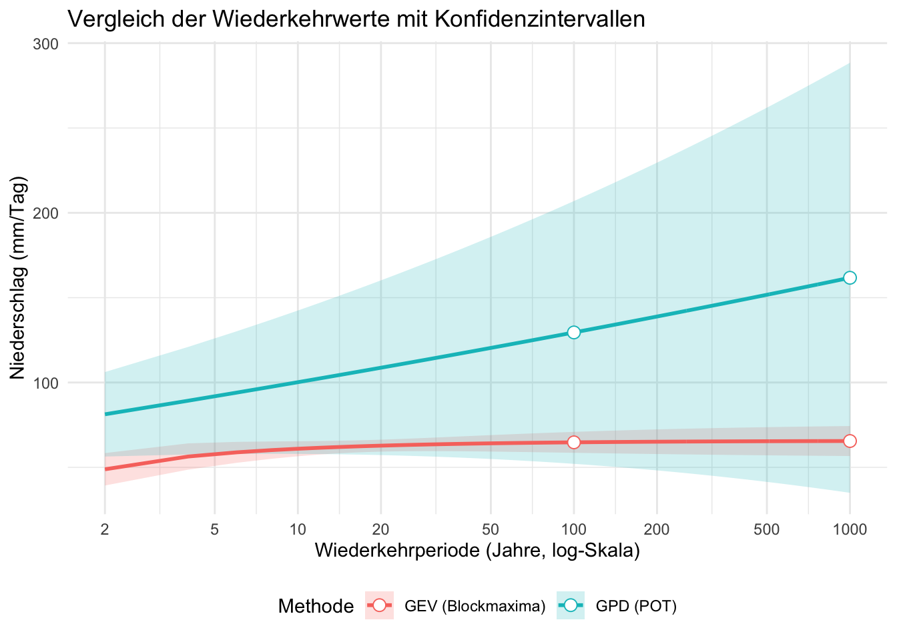

library(dplyr)
data <- read.csv("Data/meteodaten_tag.csv", sep = ",", na.strings = "-")
data$Datum <- as.Date(paste(data$Jahr, data$Monat, data$Tag, sep = "-"))
# Jahresmaxima für den Blockmaxima-Ansatz
jahres_maxima <- data %>%
group_by(Jahr) %>%
summarise(MaxNiederschlag = max(Niederschlag.mm.Tag., na.rm = TRUE))
# Schwellenwert für den POT-Ansatz (95. Perzentil)
threshold <- quantile(data$Niederschlag.mm.Tag., 0.95, na.rm = TRUE)
extreme_events <- data %>%
filter(Niederschlag.mm.Tag. > threshold) %>%
pull(Niederschlag.mm.Tag.) # Extrahiert nur die Niederschlagswerte als Vektor14 Extremwertstatistik
Extremereignisse, wie starke Niederschläge, stellen eine bedeutende Herausforderung für Hochwasserschutz, Infrastrukturplanung und Klimarisikoanalysen dar. Die Extremwertstatistik liefert Methoden, um seltene, extreme Ereignisse zu quantifizieren. In diesem Kapitel betrachten wir zwei zentrale Ansätze:
- Blockmaxima-Ansatz (GEV-Verteilung)
- Peaks-over-Threshold (POT-Ansatz, Generalized Pareto Distribution - GPD)
Wir vergleichen beide Methoden hinsichtlich ihrer Annahmen, Stärken und Schwächen.
14.1 Grundlagen der Extremwertstatistik
- Wiederkehrwert \(X(T)\): Der Wert, der im Durchschnitt alle \(T\) Jahre überschritten wird.
- Wiederkehrperiode \(T\): Gibt an, wie selten ein Ereignis ist (z.B. ein 100-jähriges Ereignis wird im Mittel alle 100 Jahre überschritten).
- Überschreitungswahrscheinlichkeit: \(P = \frac{1}{T}\) pro Jahr.
Datenaufbereitung
Wir verwenden tägliche Niederschlagsdaten, um Extremereignisse zu identifizieren.
Datenüberblick
- Maximaler Tagesniederschlag in der Zeitreihe: 64.2 mm/Tag
- 95%-Schwellenwert für Extremereignisse: 15.54 mm/Tag
14.2 Blockmaxima-Ansatz (GEV-Verteilung)
Der Blockmaxima-Ansatz betrachtet den höchsten Wert in festgelegten Zeitblöcken (hier: jährlich). Diese Maxima werden mit der Generalized Extreme Value (GEV)-Verteilung modelliert.
\[ \operatorname{GEV}(x ; \mu, \sigma, \xi)=\exp \left\{-\left[1+\xi\left(\frac{x-\mu}{\sigma}\right)\right]^{-1 / \xi}\right\} \]
- \(\mu\) ist der Lageparameter
- \(\sigma\) ist der Skalenparameter
- \(\xi\) ist der Formparameter
- \(\xi = 0\) entspricht der Gumbel-Verteilung und die Verteilung ist unbeschränkt
- \(\xi > 0\) entspricht der Fréchet-Verteilung und die Verteilung ist nach unten beschränkt
- \(\xi < 0\) entspricht der Weibull-Verteilung und die Verteilung ist nach oben beschränkt
library(extRemes)
gev_fit <- fevd(jahres_maxima$MaxNiederschlag, type = "GEV")
summary(gev_fit)
fevd(x = jahres_maxima$MaxNiederschlag, type = "GEV")
[1] "Estimation Method used: MLE"
Negative Log-Likelihood Value: 50.47947
Estimated parameters:
location scale shape
44.1527070 14.4947231 -0.6719294
Standard Error Estimates:
location scale shape
4.8703829 4.9359710 0.4169397
Estimated parameter covariance matrix.
location scale shape
location 23.7206294 0.2456008 -1.1427263
scale 0.2456008 24.3638095 -1.6521606
shape -1.1427263 -1.6521606 0.1738387
AIC = 106.9589
BIC = 108.6538 14.2.1 Parameter der GEV-Verteilung:
- Lageparameter (\(\mu\)): 44.15 mm/Tag
- Skalenparameter (\(\sigma\)): 14.49 mm/Tag
- Formparameter (\(\xi\)): -0.672 also Weibull-Verteilt und nach oben beschränkt
14.2.2 Berechnung von Wiederkehrwerten (GEV)
gev_return_levels <- return.level(gev_fit, c(100, 1000))
gev_return_levelsfevd(x = jahres_maxima$MaxNiederschlag, type = "GEV")
get(paste("return.level.fevd.", newcl, sep = ""))(x = x, return.period = return.period)
GEV model fitted to jahres_maxima$MaxNiederschlag
Data are assumed to be stationary
[1] "Return Levels for period units in years"
100-year level 1000-year level
64.74390 65.51642 - 100-jähriges Ereignis: 64.74 mm/Tag
- 1000-jähriges Ereignis: 65.52 mm/Tag
Wenn wir diese Werte mit dem höchsten Wert aus unserer Zeitreihe (64.2 mm/Tag) vergleichen, sehen wir, dass die GEV-Verteilung grosse Probleme mit nur so wenigen Datenpunkten (unsere Zeitreihe ist nur 13 Jahre lang, die Methode berechnet also die Wiederkehrwerte mit nur 13 Datenpunkten) hat.
14.3 Peaks-over-Threshold (POT-Ansatz, GPD)
Einen Ansatz um bei kurzen Zeitreihen die Wiederkehrwerte zu berechnen, ist der POT-Ansatz. Hier wird die Verteilung der Extremwerte oberhalb eines Schwellenwerts betrachtet. Das setzt voraus, dass die Extremwerte unabhängig voneinander sind und erfordert theoretisches Grundlagenwissen um den Schwellenwert subjektiv zu bestimmen.
Der POT-Ansatz betrachtet alle Werte, die einen definierten Schwellenwert überschreiten (hier das 95. Perzentil). Diese Extremwerte werden mit der Generalized Pareto Distribution (GPD) modelliert.
pot_fit <- fevd(extreme_events,
threshold = threshold,
type = "GP")
summary(pot_fit)
pot_params <- pot_fit$results$par
fevd(x = extreme_events, threshold = threshold, type = "GP")
[1] "Estimation Method used: MLE"
Negative Log-Likelihood Value: 739.7819
Estimated parameters:
scale shape
8.68543965 0.04087106
Standard Error Estimates:
scale shape
0.85257220 0.07289508
Estimated parameter covariance matrix.
scale shape
scale 0.72687936 -0.044552840
shape -0.04455284 0.005313693
AIC = 1483.564
BIC = 1490.449 14.3.1 Parameter der GPD:
- Schwellenwert: 15.54 mm/Tag
- Skalenparameter (\(\sigma\)): 8.69 mm/Tag
- Formparameter (\(\xi\)): 0.041
14.3.2 Berechnung von Wiederkehrwerten (POT)
pot_return_levels <- return.level(pot_fit, c(100, 1000))
pot_return_levelsfevd(x = extreme_events, threshold = threshold, type = "GP")
get(paste("return.level.fevd.", newcl, sep = ""))(x = x, return.period = return.period)
GP model fitted to extreme_events
Data are assumed to be stationary
[1] "Return Levels for period units in years"
100-year level 1000-year level
129.5096 161.7263 - 100-jähriges Ereignis (POT): 129.51 mm/Tag
- 1000-jähriges Ereignis (POT): 161.73 mm/Tag
Zur Erinnerung: der höchste Wert in unserer Zeitreihe war 64.2 mm/Tag. Das liefert uns also eine komplett andere Schätzung für die Wiederkehrwerte.
14.4 Visualisierung der Wiederkehrwerte
Code
library(ggplot2)
# 1. Definition des Bereichs für die Wiederkehrperioden
return_periods <- seq(2, 1000, length.out = 500)
# 2. Berechnung der Wiederkehrwerte für beide Modelle
gev_return_levels_full <- return.level(gev_fit, return.period = return_periods)
pot_return_levels_full <- return.level(pot_fit, return.period = return_periods)
# 3. Berechnung der Konfidenzintervalle
gev_ci <- ci(gev_fit, return.period = return_periods)
pot_ci <- ci(pot_fit, return.period = return_periods)
# 4. Daten für den Plot zusammenfassen
plot_data <- data.frame(
ReturnPeriod = rep(return_periods, 2),
ReturnLevel = c(gev_return_levels_full, pot_return_levels_full),
LowerCI = c(gev_ci[, "95% lower CI"], pot_ci[, "95% lower CI"]),
UpperCI = c(gev_ci[, "95% upper CI"], pot_ci[, "95% upper CI"]),
Methode = rep(c("GEV (Blockmaxima)", "GPD (POT)"), each = length(return_periods))
)
# 5. Plot erstellen
ggplot(plot_data, aes(x = ReturnPeriod, y = ReturnLevel, color = Methode, fill = Methode)) +
geom_ribbon(aes(ymin = LowerCI, ymax = UpperCI), alpha = 0.2, linetype = 0) + # Unsicherheitsbereich
geom_line(linewidth = 1) + # Verteilungsfunktion
geom_point(data = plot_data %>% filter(ReturnPeriod %in% c(100, 1000)), # Markierung für 100- und 1000-jähriges Ereignis
aes(x = ReturnPeriod, y = ReturnLevel),
size = 3, shape = 21, fill = "white") +
scale_x_log10(breaks = c(2, 5, 10, 20, 50, 100, 200, 500, 1000)) + # Log-Skala
labs(
title = "Vergleich der Wiederkehrwerte mit Konfidenzintervallen",
x = "Wiederkehrperiode (Jahre, log-Skala)",
y = "Niederschlag (mm/Tag)"
) +
theme_minimal() +
theme(legend.position = "bottom")
14.5 Direkter Vergleich der Methoden
vergleich <- data.frame(
Methode = c("GEV (Blockmaxima)", "GPD (POT)"),
`100-jährig (mm)` = c(gev_return_levels[1], pot_return_levels[1]),
`1000-jährig (mm)` = c(gev_return_levels[2], pot_return_levels[2])
)
vergleich Methode X100.jährig..mm. X1000.jährig..mm.
1 GEV (Blockmaxima) 64.7439 65.51642
2 GPD (POT) 129.5096 161.7263214.5.1 Interpretation:
- GEV (Blockmaxima): Nutzt nur ein Extremereignis pro Jahr.
- GPD (POT): Berücksichtigt alle extremen Ereignisse oberhalb der Schwelle → häufig realistischere Werte bei kurzen Zeitreihen.
14.5.2 Vorteile des Blockmaxima-Ansatzes (GEV):
- Einfach zu berechnen und zu interpretieren.
- Robuster bei langen Zeitreihen.
14.5.3 Nachteile des Blockmaxima-Ansatzes (GEV):
- Viele extreme Ereignisse werden nicht berücksichtigt.
- Wenige Datenpunkte führen zu hoher Unsicherheit.
14.5.4 Vorteile des POT-Ansatzes (GPD):
- Nutzt mehr Extremwerte → bessere statistische Basis.
- Flexibler bei kurzen Zeitreihen.
14.5.5 Nachteile des POT-Ansatzes (GPD):
- Wahl des Schwellenwerts ist kritisch.
- Abhängigkeiten zwischen Extremereignissen müssen beachtet werden.
Beide Methoden haben ihre Berechtigung:
- Blockmaxima (GEV) ist geeignet für lange Zeitreihen mit stabilen Extremwerten.
- POT (GPD) liefert bei kurzen Datensätzen oft realistischere Ergebnisse.